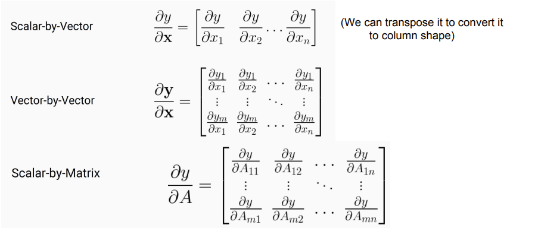
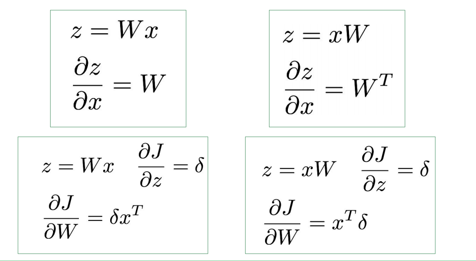
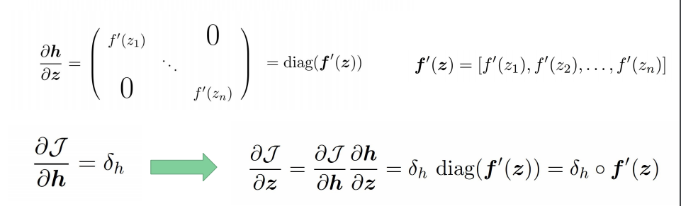
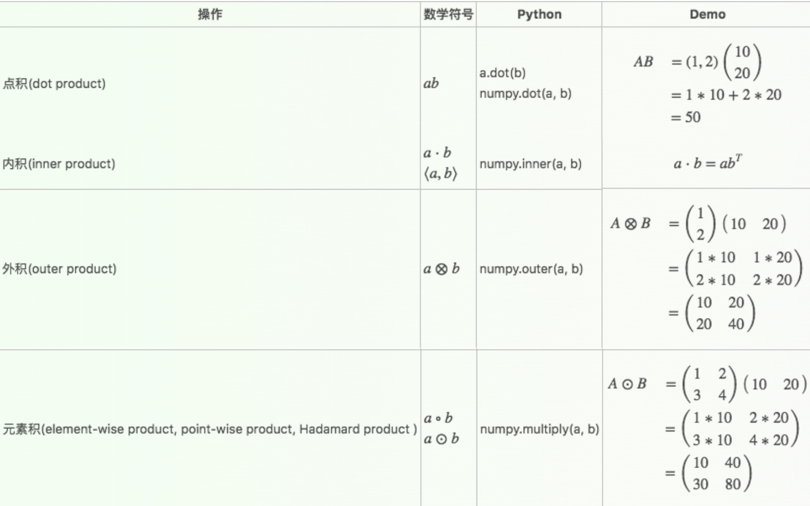
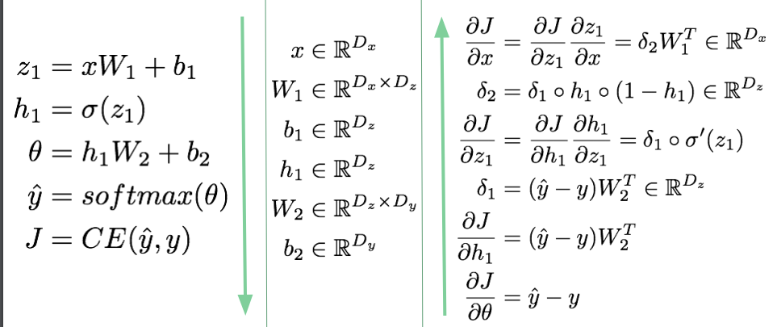
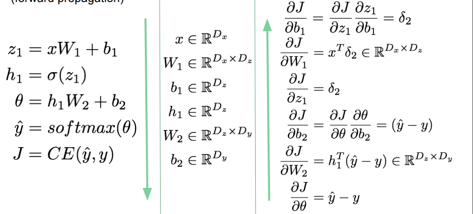

矩阵计算基础
- 标量对向量的导数：标量对向量的每一维求导，结果是一个向量
- 向量对向量的导数：向量的每一维对向量的每一维求导，结果是一个矩阵
- 标量对矩阵的导数：标量对矩阵的每一个元素求导，结果是一个矩阵

【结论】求导结果总是和求导对象大小相同
常见的导数运算：

激活函数
定义 $h$ 是 $z$ 的函数 $h=f(z)$, $h$ 和$z$ 都是n维向量。求

注意 $\circ$ 是元素积，也叫哈达马相乘，顺便补充一下矩阵各种乘积

反向传播
以常见的三层NN为例来计算BP过程。
- 定义前向传播中每一步的函数：
从最后一层开始，每一层各自求导，再利用链式法则计算：
- 先对 $x$ 求导
 - 再对 $W_2$, $b_2$, $W_1$, $b_1$ 求导

- 先对 $x$ 求导